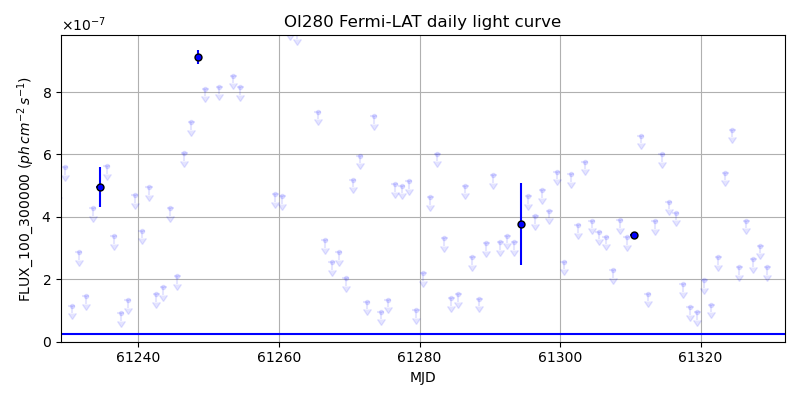
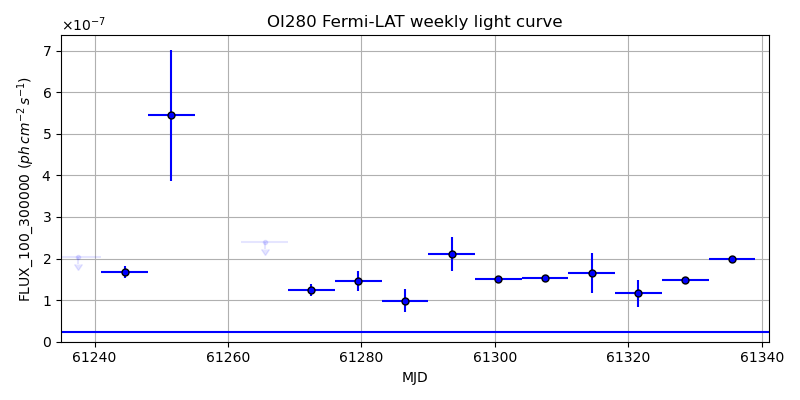
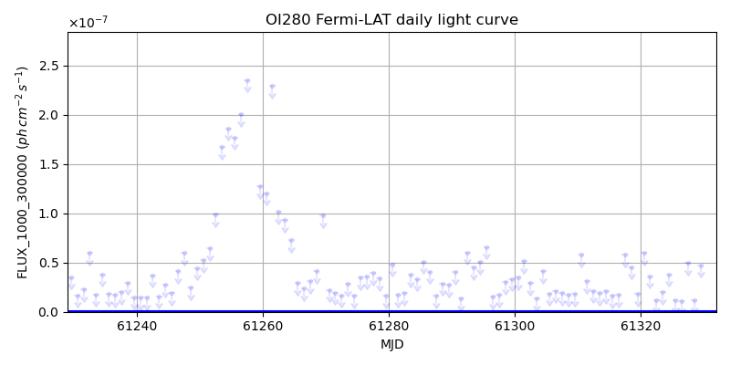
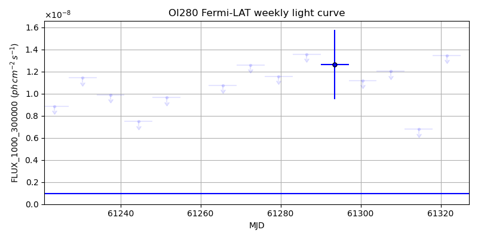

LAT Lightcurve site: https://fermi.gsfc.nasa.gov/ssc/data/access/lat/msl_lc/source/OI_280
NED: Query
Time of last update of this page: UT: 2026-10-24 15:19 (MJD: 61337.639)
| Property | Value |
|---|---|
| R.A. | 7:51:05.28 |
| Dec. | 12:36:50.4 |
| z | 0.889 |
| 3FGL SpectrumType | PowerLaw |
| 3FGL PL Index | 2.41 |
| 3FGL Flux_100_300000 | 2.42e-08 1 / (s cm2) |
| 3FGL Flux_1000_300000 | 9.38e-10 1 / (s cm2) |
| 3FGL Flux >200 GeV | 5.30e-13 1 / (s cm2) |
| 3FGL Extrap. Crab >200 GeV | 0.00 |
| 3FGL Flux After EBL Absorption >200GeV | 1.36e-14 1 / (s cm2) |
| 3FGL EBL Crab Fraction >200GeV | 0.00 |

| MJD | dMJD | Flux | dFlux | Frac3FGL | FracCrab>200GeV | EBLFracCrab>200GeV |
|---|---|---|---|---|---|---|
| 61332.50 | 0.50 | 3.24e-07 | 0.00e+00 | 0.00 | 0.00 | 0.00 |
| 61333.50 | 0.50 | 3.05e-07 | 0.00e+00 | 0.00 | 0.00 | 0.00 |
| 61334.50 | 0.50 | 4.35e-07 | 0.00e+00 | 0.00 | 0.00 | 0.00 |
| 61335.50 | 0.50 | 5.98e-07 | 0.00e+00 | 0.00 | 0.00 | 0.00 |
| 61336.50 | 0.50 | 1.74e-07 | 7.35e-09 | 7.21 | 0.02 | 0.00 |

| MJD | dMJD | Flux | dFlux | Frac3FGL | FracCrab>200GeV | EBLFracCrab>200GeV |
|---|---|---|---|---|---|---|
| 61300.50 | 3.50 | 1.51e-07 | 3.69e-09 | 6.23 | 0.01 | 0.00 |
| 61307.50 | 3.50 | 1.53e-07 | 3.57e-09 | 6.31 | 0.01 | 0.00 |
| 61314.50 | 3.50 | 1.66e-07 | 4.74e-08 | 6.85 | 0.02 | 0.00 |
| 61321.50 | 3.50 | 1.17e-07 | 3.27e-08 | 4.83 | 0.01 | 0.00 |
| 61328.50 | 3.50 | 1.49e-07 | 3.06e-09 | 6.17 | 0.01 | 0.00 |

| MJD | dMJD | Flux | dFlux | Frac3FGL | FracCrab>200GeV | EBLFracCrab>200GeV |
|---|---|---|---|---|---|---|
| 61332.50 | 0.50 | 3.46e-08 | 0.00e+00 | 0.00 | 0.00 | 0.00 |
| 61333.50 | 0.50 | 3.78e-08 | 0.00e+00 | 0.00 | 0.00 | 0.00 |
| 61334.50 | 0.50 | 3.46e-08 | 0.00e+00 | 0.00 | 0.00 | 0.00 |
| 61335.50 | 0.50 | 1.31e-08 | 0.00e+00 | 0.00 | 0.00 | 0.00 |
| 61336.50 | 0.50 | 5.73e-08 | 0.00e+00 | 0.00 | 0.00 | 0.00 |

| MJD | dMJD | Flux | dFlux | Frac3FGL | FracCrab>200GeV | EBLFracCrab>200GeV |
|---|---|---|---|---|---|---|
| 61300.50 | 3.50 | 1.12e-08 | 0.00e+00 | 0.00 | 0.00 | 0.00 |
| 61307.50 | 3.50 | 1.20e-08 | 0.00e+00 | 0.00 | 0.00 | 0.00 |
| 61314.50 | 3.50 | 6.78e-09 | 0.00e+00 | 0.00 | 0.00 | 0.00 |
| 61321.50 | 3.50 | 1.35e-08 | 0.00e+00 | 0.00 | 0.00 | 0.00 |
| 61328.50 | 3.50 | 1.23e-08 | 0.00e+00 | 0.00 | 0.00 | 0.00 |
--------------------------------------------------------- Using user-supplied coords: 7:51:05.28 12:36:50.4 2000 --------------------------------------------------------- FLWO UT night of: 2026-10-25 Local Sid. @ Midnight: 01:50 Sunset (-15.0) (local, UT): 18:49 01:49 Sunrise (-15.0) (local, UT): 05:27 12:27 Moonrise (local, UT): Moonset (local, UT): Moon phase: 0.99 --------------------------------------------------------- AzTime LSID UT Obj_el Obj_az Mn_el Mn_az Sep. --------------------------------------------------------- 18:49 20:39 01:49 -44.4 16.1 26.2 94.5 100.4 19:19 21:09 02:19 -42.1 25.6 32.4 98.6 100.1 19:49 21:39 02:49 -38.9 34.3 38.6 103.2 99.9 20:19 22:09 03:19 -34.9 42.1 44.7 108.4 99.7 20:49 22:39 03:49 -30.4 48.9 50.6 114.6 99.5 21:19 23:09 04:19 -25.3 54.9 56.2 122.3 99.3 21:49 23:39 04:49 -19.9 60.3 61.2 132.2 99.1 22:19 00:09 05:19 -14.2 65.2 65.5 145.3 98.9 22:49 00:39 05:49 -8.3 69.6 68.4 162.2 98.7 23:19 01:10 06:19 -1.3 73.8 69.4 182.2 98.5 23:49 01:40 06:49 4.1 77.7 68.2 202.0 98.3 00:19 02:10 07:19 10.3 81.5 65.1 218.6 98.1 00:49 02:40 07:49 16.7 85.3 60.8 231.3 98.0 01:19 03:10 08:19 23.0 89.1 55.7 240.9 97.8 01:49 03:40 08:49 29.4 93.1 50.1 248.5 97.6 02:19 04:10 09:19 35.8 97.5 44.3 254.6 97.4 02:49 04:40 09:49 42.1 102.3 38.2 259.8 97.1 03:19 05:10 10:19 48.3 107.9 32.1 264.4 96.9 03:49 05:40 10:49 54.2 114.8 26.0 268.5 96.7 04:19 06:10 11:19 59.8 123.6 19.9 272.4 96.4 04:49 06:40 11:49 64.8 135.3 13.8 276.2 96.2 05:19 07:11 12:19 68.6 151.1 7.8 279.9 95.9 05:27 07:18 12:27 69.4 156.0 6.2 280.9 95.8 --------------------------------------------------------- Moon up all night, no dark time. Dark hours >55 deg.: 0.00